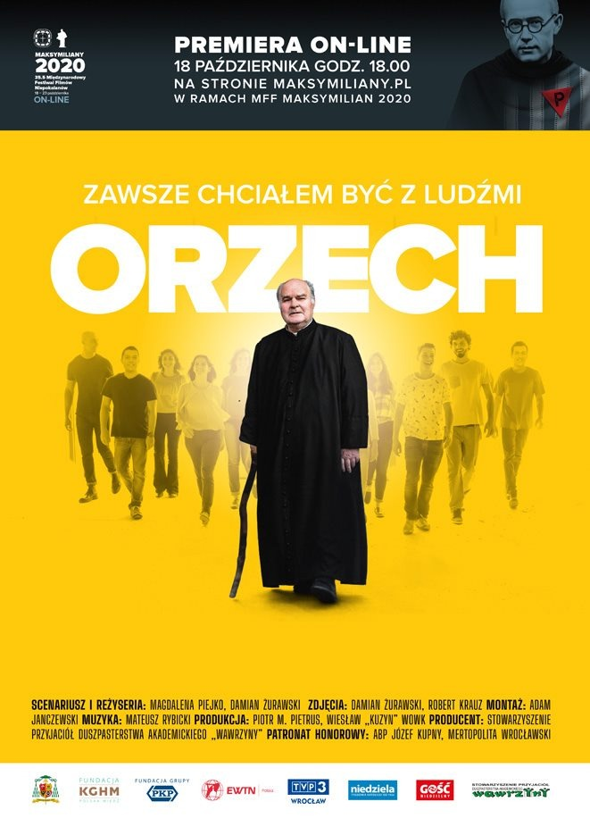

<!-- Film Section: Orzech - Zawsze chciałem być z ludźmi -->
<div class="max-w-7xl mx-auto px-4 sm:px-6 lg:px-8">
    <div class="relative bg-white rounded-[3rem] overflow-hidden shadow-2xl border border-gray-100 group">
        <!-- Background Elements -->
        <div class="absolute inset-0 opacity-[0.03] pointer-events-none">
            
        </div>
        <div class="absolute top-0 right-0 w-[500px] h-[500px] bg-yellow-500/10 rounded-full -mr-64 -mt-64 blur-[100px] opacity-60"></div>
        <div class="absolute bottom-0 left-0 w-[300px] h-[300px] bg-primary/5 rounded-full -ml-32 -mb-32 blur-[80px] opacity-40"></div>

        <div class="relative z-10 grid grid-cols-1 lg:grid-cols-12 gap-0 items-stretch">
            <!-- Image Panel (Poster) -->
            <div class="lg:col-span-5 relative min-h-[500px] lg:min-h-0 overflow-hidden">
                
                <!-- Overlay for mobile/desktop transition -->
                <div class="absolute inset-0 bg-gradient-to-t from-white via-transparent to-transparent lg:hidden"></div>
                <div class="absolute inset-y-0 right-0 w-32 bg-gradient-to-l from-white to-transparent hidden lg:block"></div>
                
                <!-- Floating Badge -->
                <div class="absolute top-8 left-8 bg-yellow-500 text-black px-6 py-2 rounded-full font-black text-sm uppercase tracking-widest shadow-xl rotate-[-2deg]">
                    Główna Nagroda
                </div>
            </div>

            <!-- Content Panel -->
            <div class="lg:col-span-7 p-8 md:p-12 lg:p-16 flex flex-col justify-center">
                <div class="flex items-center gap-3 mb-6">
                    <div class="w-12 h-12 bg-yellow-500/10 rounded-xl flex items-center justify-center backdrop-blur-md border border-yellow-500/20">
                        <i data-lucide="award" class="w-6 h-6 text-yellow-600"></i>
                    </div>
                    <span class="text-yellow-600 font-bold tracking-[0.2em] uppercase text-sm">Premiera Nagrodzona</span>
                </div>

                <h2 class="text-4xl md:text-5xl font-black text-slate-900 mb-8 leading-tight">
                    Film „Orzech – zawsze chciałem być z ludźmi”
                </h2>

                <div class="space-y-6 text-slate-600 text-lg leading-relaxed">
                    <p class="font-medium text-slate-800 italic border-l-4 border-yellow-500 pl-6 bg-yellow-500/5 py-4 rounded-r-2xl">
                        Pierwszy pełnometrażowy dokument o życiu księdza Stanisława Orzechowskiego – kultowego, 
                        wrocławskiego duszpasterza akademickiego, kapelana „Solidarności” a także m.in. 
                        inicjatora i organizatora pieszych pielgrzymek na Jasną Górę.
                    </p>

                    <p>
                        W filmie pojawiły się unikalne materiały archiwalne, świadectwa kilku pokoleń wychowanków 
                        „Orzecha”, fragmenty kazań. Życie powszechnie szanowanego wrocławskiego duszpasterza to 
                        materiał na kilka filmów. W filmie twórcom udało się ukazać, to, co dla naszych rozmówców 
                        wydawało się najistotniejsze.
                    </p>

                    <p>
                        Film w roku 2020 otrzymał główną nagrodę – <strong class="text-slate-900">Złoty Opornik</strong> dla filmu dokumentalnego 
                        festiwalu filmowego „Niepokorni Niezłomni Wyklęci” w Gdyni. 
                        <span class="text-primary font-semibold">Stowarzyszenie w dużym zakresie wsparło realizację tego dzieła.</span>
                    </p>
                </div>

                <div class="mt-12 flex flex-col sm:flex-row gap-6 items-center">
                    <a href="https://orzech.wroc.pl/film/" target="_blank"
                        class="w-full sm:w-auto inline-flex items-center justify-center gap-3 bg-slate-900 text-white px-10 py-5 rounded-2xl font-black text-lg hover:bg-yellow-500 hover:text-black hover:scale-105 transition-all duration-300 shadow-xl group/btn">
                        Obejrzyj online
                        <i data-lucide="play-circle" class="w-6 h-6 group-hover/btn:rotate-12 transition-transform"></i>
                    </a>
                    
                    <div class="flex items-center gap-4 text-sm text-slate-500">
                        <div class="flex -space-x-2">
                             <div class="w-10 h-10 rounded-full bg-slate-100 border-2 border-white flex items-center justify-center shadow-sm">
                                 <i data-lucide="star" class="w-5 h-5 text-yellow-500 fill-yellow-500"></i>
                             </div>
                             <div class="w-10 h-10 rounded-full bg-slate-100 border-2 border-white flex items-center justify-center shadow-sm">
                                 <i data-lucide="award" class="w-5 h-5 text-primary"></i>
                             </div>
                        </div>
                        <span class="font-medium">Nagrodzony na festiwalu NNW w Gdyni</span>
                    </div>
                </div>
            </div>
        </div>
    </div>
</div>
